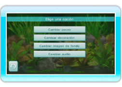
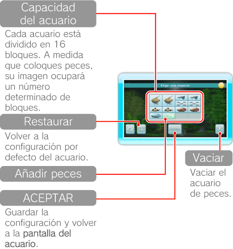
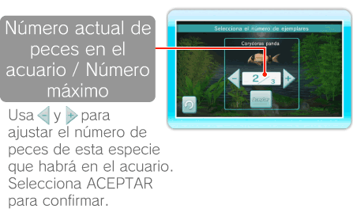
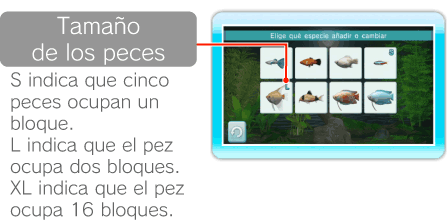
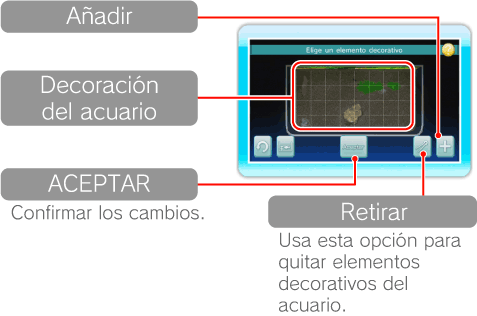
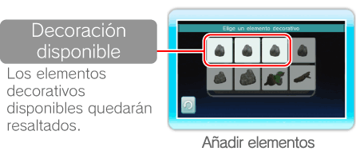
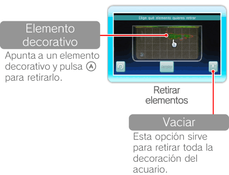

15 |
Configuración del acuario |
 |
|

Apunta a
Esta opción permite cambiar el número y el tipo de peces de tu acuario. El número de peces que puedes tener en cada acuario depende de su tamaño. Cuando hayas acabado de ajustar la configuración, selecciona ACEPTAR para confirmar. 
Apunta a un bloque que esté ocupado y pulsa  Selecciona 
Puedes mover y cambiar los elementos decorativos, como ramas y rocas. Cuando hayas acabado de decorar el acuario, selecciona ACEPTAR para confirmar. La flora del acuario se colocará automáticamente. 
Agarra elementos decorativos seleccionándolos con  . Apunta al lugar que deseas que ocupen y pulsa de nuevo para soltarlos. También puedes girarlos con . Apunta al lugar que deseas que ocupen y pulsa de nuevo para soltarlos. También puedes girarlos con Nota: Si las cuadrículas que ocupa un elemento decorativo se vuelven de color rojo, significa que no puede colocarse en ese lugar.
Selecciona   |
 |
 |
 |